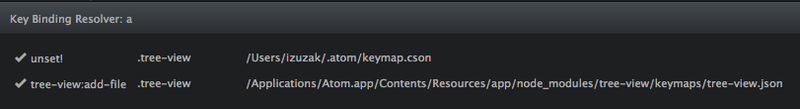

深入键表（keymap）#
键表文件是以JSON或者CSON编码的文件，其中含有嵌套的哈希表。它们的工作方式像是样式表，但是它们指定匹配选择器的元素的快捷键的作用，而不是应用样式属性。下面是一些快捷键的例子，它们在atom-text-editor元素上按下时生效：
'atom-text-editor': 'cmd-delete': 'editor:delete-to-beginning-of-line' 'alt-backspace': 'editor:delete-to-beginning-of-word' 'ctrl-A': 'editor:select-to-first-character-of-line' 'ctrl-shift-e': 'editor:select-to-end-of-line' 'cmd-left': 'editor:move-to-first-character-of-line' 'atom-text-editor:not([mini])': 'cmd-alt-[': 'editor:fold-current-row' 'cmd-alt-]': 'editor:unfold-current-row'
在第一个选择器底下绑定了一些快捷键，将特定的键位通配符映射到命令上面。当一个atom-text-editor元素获得焦点，并且cmd-delete被按下，一个叫做editor:delete-to-beginning-of-line的自定义DOM事件会在atom-text-editor元素上面触发。
第二个选择器分组也指向了编辑器，但是只是没有mini属性的编辑器。在这个例子中，代码折叠的命令在迷你编辑器中毫无意义，所以选择器将它们限制于普通的编辑器中。
键位通配符（keystroke pattern）#
键位通配符表示一个或者多个键位，带有可选的辅助键（modifier key）。例如ctrl-w v和cmd-shift-up。键位由下面的符号组成，以-分隔。一个多种键位的通配符可以表示为以空格分割的键位通配符。
| 类型 | 例子 |
|---|---|
| 字符的字面值 | a 4 $ |
| 辅助键 | cmd ctrl alt shift |
| 特殊键 | enter escape backspace delete tab home end pageup pagedown left right up down |
命令#
命令是自定义的DOM事件，当一个键位匹配到绑定的快捷键时触发。这可以让UI代码来监听具名的命令，而不需要指定触发它的特定的快捷键。例如，下面的代码创建了一个命令来向编辑器插入当前日期：
atom.commands.add 'atom-text-editor',
'user:insert-date': (event) ->
editor = @getModel()
editor.insertText(new Date().toLocaleString())
atom.commands指向全局{CommandRegistry}的实例，所有命令在它里面设置，并且可以通过命令面板来获取。
当你想要绑定新的快捷键时，使用命令面板（ctrl-shift-p）来看一看在一个具有焦点的上下文中，什么命令正在被监听，是十分有用的。遵循一个简单的算法使得命令会很“人性化”，所以editor:fold-current-row命令会显示为“Editor: Fold Current Row”。
“组合”命令#
一个很常见的问题是，“我如何使用一个快捷键来执行两个或者更多命令？”Atom并不直接支持这一需求，但是我们可以通过创建一个自定义命令，它执行你想要的多个操作，并且为这个命令创建一个快捷键来解决。例如，假设我想创建一个“组合”命令，选取并剪切一行。你可以在init.coffee中添加一下代码：
atom.commands.add 'atom-text-editor', 'custom:cut-line', -> editor = atom.workspace.getActiveTextEditor() editor.selectLinesContainingCursors() editor.cutSelectedText()
然后我们想要把这个命令关联到alt-ctrl-z上去，你应该添加以下内容到键表中：
'atom-text-editor': 'alt-ctrl-z': 'custom:cut-line'
特异性（优先级）和层级顺序#
就像这个应用了CSS样式的例子，当很多快捷键的绑定匹配到一个元素的时候，冲突通过选择最特别的选择器来解决。如果两个匹配到的选择器具有相同的特异性，在层级中出现顺序靠后的选择器的快捷键会优先执行。
当前，没有任何方法在一个单独的键表中指定快捷键的顺序，因为JSON的对象是无序的。我们最终打算为键表引入一个自定义类似CSS的文件格式来允许在单个文件中排序。到目前为止，我们可以选择性解决一些情况，其中选择器的顺序由把键表分开放到两个文件中来严格规定。就像snippets-1.cson和snippets-2.cson。
移除快捷键#
当键表系统遇到了以unset!作为快捷键的命令，它就会像没有绑定匹配到当前键位序列一样，继续从它的父节点中寻找。如果你想移除一个你不再用到的快捷键，例如Atom核心中的或者包中的快捷键，应该直接使用unset!。
例如，下面的代码移除了树视图上a的快捷键，它一般会触发tree-view:add-file命令：
'.tree-view': 'a': 'unset!'

强制Chrome处理本地快捷键#
如果你想要在一个提供的快捷键上强制执行本地浏览器的行为，直接使用native!作为绑定的命令。这会在启动本地输入元素的正确行为时比较有用。例如，如果你在一个元素上面应用了.native-key-bindings class，所有由浏览器处理的快捷键都会绑定为native!。
重载快捷键#
一些情况下需要把多个动作依次放到同一个快捷键下面。一个例子就是代码段的包，代码段由输入一个类似for的前缀之后按下tab来插入。每次tab按下的时候，如果光标前面的文字存在对应的代码段，我们想要执行代码来展开代码段。如果代码段并不存在，我们希望tab插入空白字符。
要实现成这样，代码段的包利用了代表snippets:expand命令的事件对象的.abortKeyBinding()方法。
# pseudo-code
editor.command 'snippets:expand', (e) =>
if @cursorFollowsValidPrefix()
@expandSnippet()
else
e.abortKeyBinding()
当事件处理器观察到光标前面并没有一个有效的前缀时，会调用`e.abortKeyBinding()来告诉键表系统继续寻找另一个匹配到的绑定。
详细步骤：按键事件如何映射到命令#
- 按键事件出现在获得焦点的元素上面。
- 由获取焦点的元素开始，键表会向上搜索，直到文档的根元素，寻找最具特异性的CSS选择器，它匹配当前DOM元素并且含有匹配按键事件的快捷键通配符。
- 找到匹配的快捷键通配符之后，搜索就结束了，并且与通配符绑定的命令会在当前元素上触发。
- 如果在触发的事件对象上调用了
.abortKeyBinding()，会恢复搜索，在相同元素上触发下一个最具特异性的CSS选择器上绑定的事件，或者继续向上搜索。 - 如果找不到任何快捷键，事件通常就会由Chrome来处理。